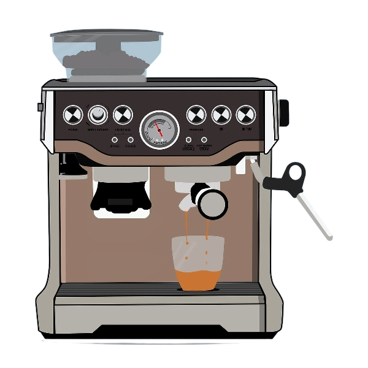

Nové kávovary
Spolehlivé řešení pro domácnosti, kanceláře, firmy i menší provozovny.
Kávovary a káva
Prodáváme nové i repasované kávovary značek Jura, Nivona a DR Coffee. Zajišťujeme servis, pravidelnou údržbu, čištění a dodáváme kvalitní kávu, čaje, filtry i čistící prostředky.

Prodej kávovarů
Spolehlivé řešení pro domácnosti, kanceláře, firmy i menší provozovny.
Cenově dostupnější varianta se zkontrolovaným technickým stavem.
Řešení pro větší provozy, kanceláře, recepce a zákaznické prostory.
Servis a údržba
Zajišťujeme odborný servis a údržbu kávovarů, aby zařízení fungovalo spolehlivě a připravovaná káva měla stále vysokou kvalitu.
Káva a čaje
Prodáváme kávu ověřených značek vhodnou pro každodenní použití v kancelářích, provozovnách, kavárnách i domácnostech.
Prémiová italská káva s plnou chutí.
Káva vhodná pro kanceláře, gastro provozy a pravidelné zásobování.
Kvalitní káva pro každodenní přípravu.
Údržba
Dodáváme filtry do kávovarů, čistící tablety, odvápňovací prostředky a přípravky proti usazování vodního kamene. Správná údržba pomáhá prodloužit životnost kávovaru a udržet kvalitu připravované kávy.
Pomůžeme s výběrem
Pomůžeme vám zvolit vhodné řešení podle počtu šálků za den, typu provozu a rozpočtu.